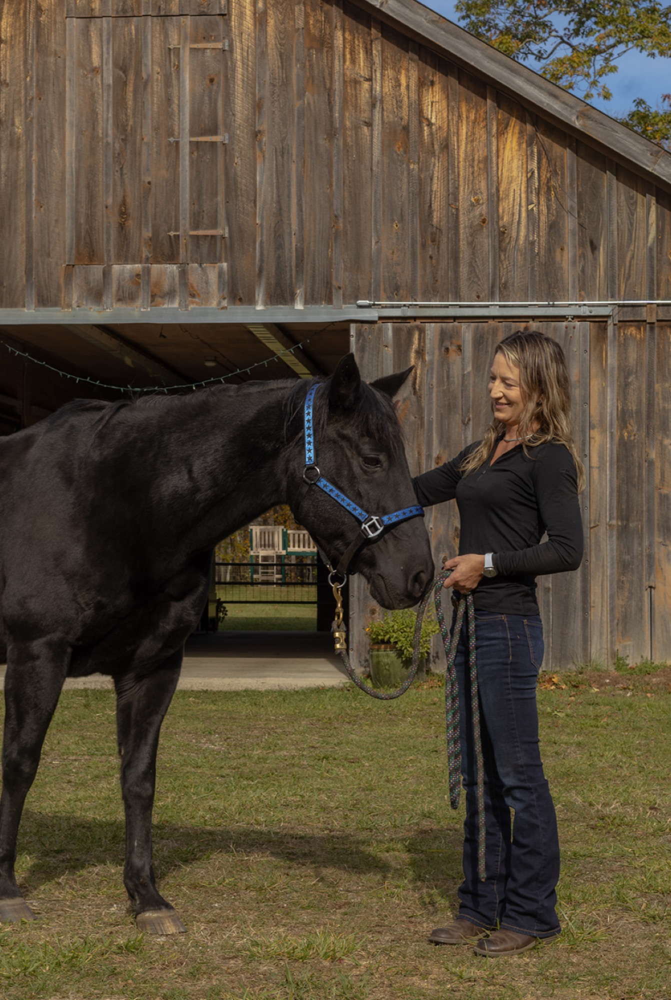

Mountain Song Farm — Horse Boarding & Equine Care in Monterey, MA
Excellence in horse care is our passion
Excellence in horse care is our passion
At Mountain Song Farm we understand that a horse is much more than a pet: they are companions, partners, and often the loves of our lives. Our standard of care is designed with this in mind. Horse owners can rest assured that in our care the comfort, happiness and well being of their horse are paramount. It is our mission to provide the ideal custom care for every horse. As a smaller facility, we are able to give personalized attention to each horse and their owner.
Horses' needs fluctuate, just like our own. We take holistic horse health seriously and understand that a healthy horse includes a healthy mind. We allow our horses plenty of pasture time for socializing with carefully chosen pasture mates to create the most stimulating and healthy environment for each horse. Our pristine farm abuts miles of beautiful and quiet trails. We are equipped with a state of the art, large indoor arena with dust free footing that our boarders can utilize year round. Our facilities are designed to cater to the individual needs of each horse, specializing in creating customized care plans.
Mountain Song Farm was founded by Tess Pollock. Tess grew up on a small homestead in Berkshire County, where her love of nature and animals soon became a lifelong passion for horses. She has dedicated her life to horse care in every capacity, from managing large boarding facilities to individualized care for several horses in a private setting. She considers it a true privilege to help keep them happy, healthy, and thriving.
Tess is also a certified EMT, and brings a thoughtful, practiced approach to all medical care, both human and horse. At Mountain Song Farm, Tess is living her dream: giving each animal the space, attention, and quality of life every horse deserves!

45 Art School Road, Monterey, MA 01245
(413) 854-3228
t.mountainsongfarm@gmail.com